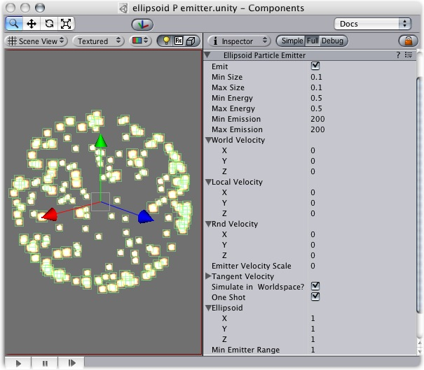
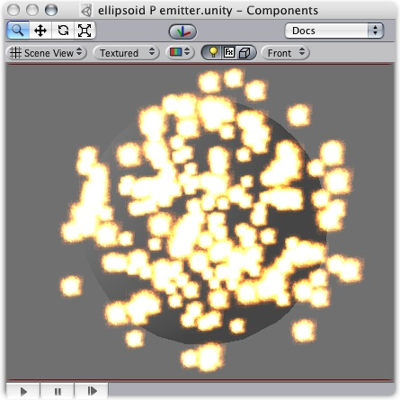
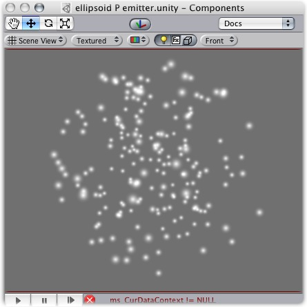
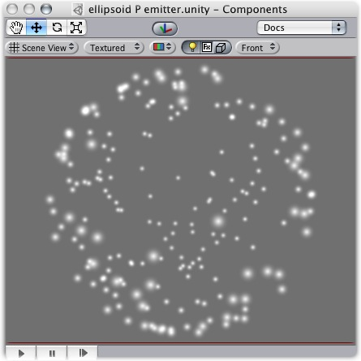

Previous
Previous
The Ellipsoid Particle Emitter spawns particles inside a sphere. Use the Ellipsoid property below to scale & stretch the sphere.

The Ellipsoid Particle Emitter
Properties
| Property: | Function: |
|---|---|
| If enabled, the emitter will emit particles. | |
| The minimum size each particle can be at the time when it is spawned. | |
| The maximum size each particle can be at the time when it is spawned. | |
| The minimum lifetime of each particle, measured in seconds. | |
| The maximum lifetime of each particle, measured in seconds. | |
| The minimum number of particles that will be spawned every second. | |
| The maximum number of particles that will be spawned every second. | |
| The starting speed of particles in world space, along X, Y, and Z. | |
| The starting speed of particles along X, Y, and Z, measured in the object's orientation. | |
| A random speed along X, Y, and Z that is added to the velocity. | |
| The amount of the emitter's speed that the particles inherit. | |
| If enabled, the particles don't move when the emitter moves. If false, when you move the emitter, the particles follow it around. | |
| If enabled, the particle numbers specified by min & max emission is spawned all at once. If disabled, the particles are generated in a long stream. | |
| Scale of the sphere along X, Y, and Z that the particles are spawned inside. | |
| Determines an empty area in the center of the sphere - use this to make particles appear on the edge of the sphere. |
Details
Ellipsoid Particle Emitters (EPEs) are the basic emitter, and are included when you choose to add a Particle System to your scene from Components -> Particles -> Particle System. You can define the boundaries for the particles to be spawned, and give the particles an initial velocity. From here, use the Particle Animator to manipulate how your particles will change over time to achieve interesting effects.

An EPE applied to a sphere
Particle Emitters work in conjunction with Particle Animators and Particle Renderers to create, manipulate, and display Particle Systems. All three components must be present on an object before the particles will behave correctly. When particles are being emitted, all different velocities are added together to create the final velocity.
Spawning Properties
Spawning properties like Size, Energy, Emission, and Velocity will give your particle system distinct personality when trying to achieve different effects. Having a small Size could simulate fireflies or stars in the sky. A large Size could simulate dust clouds in a musky old building.
Energy and Emission will control how long your particles remain onscreen and how many particles can appear at any one time. For example, a rocket might have high Emission to simulate density of smoke, and high Energy to simulate the slow dispersion of smoke into the air.
Velocity will control how your particles move. You might want to change your Velocity in scripting to achieve interesting effects, or if you want to simulate a constant effect like wind, set your X and Z Velocity to make your particles blow away.
Simulate in World Space
If this is disabled, the position of each individual particle will always translate relative to the Position of the emitter. When the emitter moves, the particles will move along with it. If you have Simulate in World Space enabled, particles will not be affected by the translation of the emitter. For example, if you have a fireball that is spurting flames that rise, the flames will be spawned and float up in space as the fireball gets further away. If Simulate in World Space is disabled, those same flames will move across the screen along with the fireball.
Emitter Velocity Scale
This property will only apply if Simulate in World Space is enabled.
If this property is set to 1, the particles will inherit the exact translation of the emitter at the time they are spawned. If it is set to 2, the particles will inherit double the emitter's translation when they are spawned. 3 is triple the translation, etc.
One Shot
One Shot emitters will create all particles within the Emission property all at once, and cease to emit particles over time. Here are some examples of different particle system uses with One Shot enabled or disabled:
Enabled
- Explosion
- Water splash
- Magic spell
Disabled
- Gun barrel smoke
- Wind effect
- Waterfall
Min Emitter Range
The Min Emitter Range determines the depth within the ellipsoid that particles can be spawned. Setting the range to 0 will allow particles to spawn anywhere from the center core of the ellipsoid to the outer-most range. Setting the range to 1 will restrict spawn locations to the outer-most range of the ellipsoid.

Min Emitter Range of 0

Min Emitter Range of 1
Hints
- Be careful of using many large particles. This can seriously hinder performance on low-level machines. Always try to use the minimum number of particles to attain an effect.
- The Emit property works in conjunction with the AutoDestruct property of the ParticleAnimator. Through scripting, you can cease the emitter from emitting, and then AutoDestruct will automatically destroy the Particle System and the GameObject it is attached to.